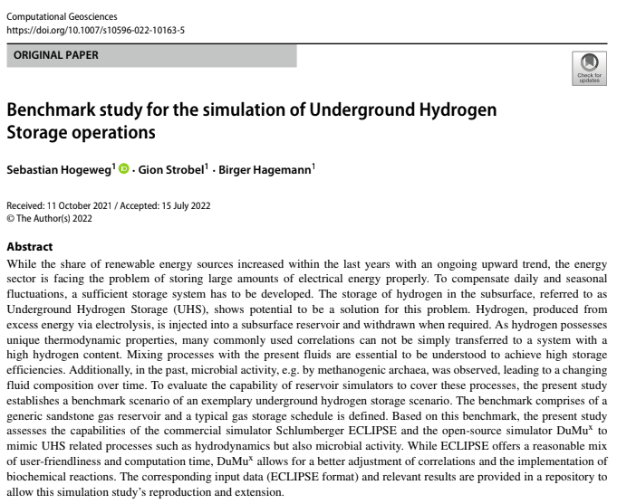

SusI Final Workshop
Make your Computational Engineering Paper reproducible
Köngen, Germany, 28.-30.09.2022
Outline
- The SusI Project
- Workshop Overview
- Introduction of Participants and Papers
The SusI Project
Project Facts
- Title: Sustainable infrastructure for the improved usability and archivability of research software on the example of the porous-media-simulator DuMux
- Applicants:
- Bernd Flemisch (IWS)
- Sibylle Hermann (UB, SimTech)
- Thomas Richter, then David Boehringer (TIK)
- Funded by the DFG, duration: 02/2019 - 09/2022
- Two funded positions, filled by
- Kilian Weishaupt, then Sarbani Roy (IWS)
- Anett Seeland, then Katharina Schulze (TIK, UB)
From the Original Project Description (2017)
- The primary objectives of the project are to
- improve the usability of the research software DuMux ...,
- advance the archivability ... such that the ... results can be reproduced.
- ... secondary objective of providing the necessary infrastructure to improve the usability and archivability of other research software projects.
- It will be possible to publish and conviently access publications with article, software, and associated research data,
- and even reproduce simulation results in an online interface.
What is DuMux?
- Stands for "DUNE for Multi-{Phase, Component, Scale, Physics, ...} flow and transport in porous media".
- Free and open-source simulator for flow and transport processes in and around porous media.
- Research code written in C++.
- Based on Dune (Distributed and Unified Numerics Environment).
- Dune user module in the Dune environment.
- Goal: sustainable and consistent framework for the implementation and application of model concepts and constitutive relations.
SusI Project Detailed Overview
Work Packages
- WP 1: Highly configurable representative DuMux executable.
- WP 2: ViPLab frontend integration into DaRUS.
- WP 3: Automated generation of DuMux Docker containers.
- WP 4: DaRUS adaptation for software and container archiving.
- WP 5: Documentation and guidelines.
- WP Z: Coordination, administration and workshops.
Workshop Overview
Main Blocks

Tools and Strategies for Automation
White text
Containerization with Docker
Generating Web Applications with ViPLab
Publication of Data and Software
Agenda
Wednesday, 28.9.
White text
| Time | Description |
|---|---|
| Arrival | |
| 12:00 | Lunch |
| 13:00 | Welcome and Overview |
| 13:30 | Introduction of Participants and Projects |
| 14:00 | Tools and Strategies for Automation |
| 15:00 | Coffee Break |
| 15:30 | Individual Project Work |
| 18:30 | Wrap-Up |
| 19:00 | Dinner and Get-Together |
Thursday, 29.9.
| Time | Description |
|---|---|
| 8:00 | Breakfast |
| 9:00 | Containerization with Docker |
| 10:00 | Individual Project Work |
| 11:00 | Coffee Break |
| 11:30 | Individual Project Work |
| 12:45 | Wrap-Up |
| 13:00 | Lunch |
| 14:00 | Generating Web Applications with ViPLab |
| 15:00 | Coffee Break |
| 15:30 | Individual Project Work |
| 18:30 | Wrap-Up |
| 19:00 | Dinner and Get-Together |
Friday, 30.9.
| Time | Description |
|---|---|
| 8:00 | Breakfast |
| 9:00 | Publication of Data and Software |
| 10:00 | Individual Project Work |
| 11:00 | Coffee Break |
| 11:30 | Individual Project Work |
| 12:30 | Conclusion and Outlook |
| 13:00 | Lunch |
| 13:30 | Departure |
The Workshop Team
- David Boehringer (TIK)
- Bernd Flemisch (IWS)
- Dennis Gläser (IWS)
- Sibylle Hermann (UB, SimTech)
- Jan Range (IBTB, SimTech)
- Sarbani Roy (IWS, SimTech)
- Martin Schneider (IWS)
- Katharina Schulze (TIK)
- Anett Seeland (TIK)
Introduction of Participants and Papers
Overview of Participants and Papers
Paper AbMu
- Title: Monolithic, non-iterative and iterative time discretization methods for linear coupled elliptic–parabolic systems
- Participant: Abdullah Mujahid, Universität Stuttgart / Universität Augsburg
- Toolchain: FEniCS
Paper DaLe
- Title: Call for Participation: Collaborative Benchmarking of Functional-Structural Root Architecture Models. The Case of Root Water Uptake
- Participant: Daniel Leitner, FZ Jülich, IBG-3
- Toolchain: DuMux, RSWMS, OpenSimRoot, Python/Matplotlib

Paper EtAh
- Title: High performance computing of 3D reactive multiphase flow in porous media: application to geological storage of CO2
- Participant: Etienne Ahusborde, University of Pau & CNRS
- Toolchain: Gmsh, DuMux, Paraview/Vtk
Paper MaKe
- Title: Comparison study of phase-field and level-set method for three-phase systems including two minerals
- Participant: Mathis Kelm, Universität Stuttgart
- Toolchain: DuMux (+RTSPHEM), Paraview/Vtk, Matlab
Paper MaNo
- Title: A Spline-based Partial Element Equivalent Circuit Method for Electrostatics
- Participant: Maximilian Nolte, Technische Universität Darmstadt
- Toolchain: Bembel, Paraview
Paper MaZo
- Title: Role of Rotated Head Postures on Volunteer Kinematics and Muscle Activity in Braking Scenarios Performed on a Driving Simulator
- Participant: Manuel Zobel, Universität Stuttgart
- Toolchain: Jupyter Lab/Notebook, Matlab
Paper NeCo
- Title: Data driven parameterization of a flow-transport model (WIP)
- Participant: Ned Coltman, Universität Stuttgart
- Toolchain: DuMux, tensorflow/Keras, Paraview/matplotlib
Paper NiMa
- Title: Fluid properties under mesoporous confinement (WIP)
- Participants: Niels Hansen, Marc Högler, Universität Stuttgart
- Toolchain: PoreMS, PoreSim, Gromacs, PoreAna
Paper SeHo
- Title: Benchmark study for the simulation of Underground Hydrogen Storage operations
- Participant: Sebastian Hogeweg, Clausthal University of Technology
- Toolchain: DuMux, ECLIPSE

Paper SoHe
- Title: Residual stresses in hot bulk formed parts: two-scale approach for austenite-to-martensite phase transformation
- Participant: Sonja Hellebrand, University of Duisburg-Essen
- Toolchain: FEAP, Matlab